Aquella vez · Manual de español
Unidad 6
Acciones en curso y descripciones

¿Qué estás haciendo?
EjercicioRelaciona las imágenes con las frases
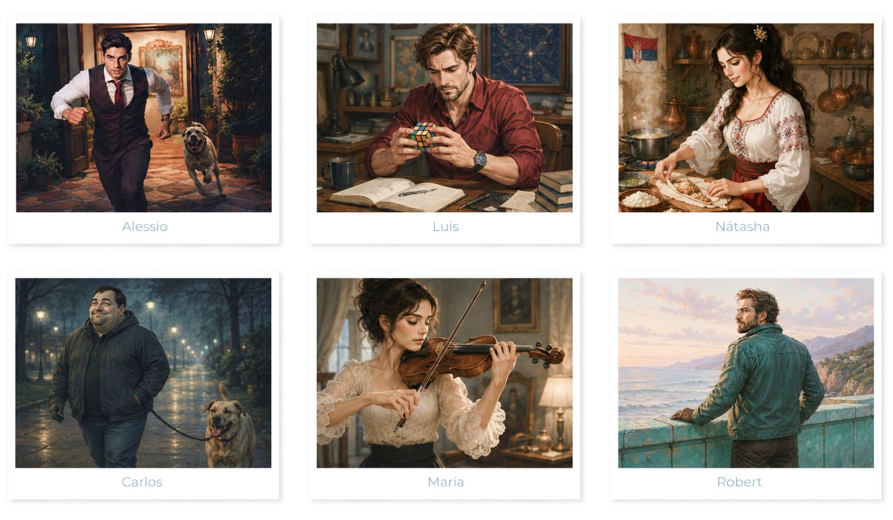
- Está tocando el violín.
- Está mirando el horizonte desde un muro turquesa.
- Está jugando con un cubo Rubik.
- Está preparando un plato serbio.
- Está escapando de un perro.
- Está paseando el perro por el parque.
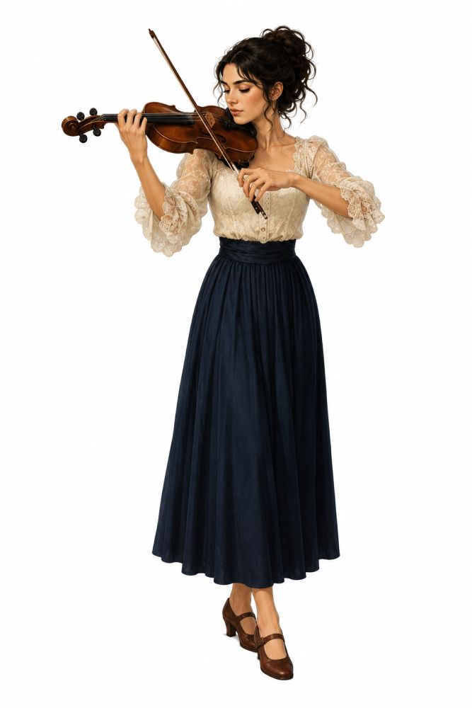
ESTAR + GERUNDIO
Usamos esta estructura para hablar de acciones que ocurren ahora.
Formación: estar + gerundio
yo estoy · tú estás · él / ella / usted está · nosotros estamos · ellos / ellas / ustedes están
Gerundio
Verbos en -AR → -ando: hablar → hablando · estudiar → estudiando
Verbos en -ER / -IR → -iendo: comer → comiendo · vivir → viviendo
Lee la conversación y contesta
Gramática: estar + gerundioAliciaMarcos, no sé quién es quién. Ayúdame.
MarcosCon gusto. Mira: Luis es el que está jugando al cubo Rubik.
AliciaSí, ya lo veo. Parece muy concentrado.
MarcosNátasha es la que está tocando el gusli. María es la que está leyendo un libro junto a la ventana.
Alicia¿Y ese hombre con el perro?
MarcosEs Carlos. Está paseando al perro por el salón, como si fuera lo más normal del mundo.
Alicia¿Y el chico elegante de la izquierda?
MarcosEse es Alessio. No está haciendo nada… pero mira todo como si estuviera pensando en robar algo.
AliciaQué sospechoso.
MarcosMuy sospechoso. Y Robert es el que está mirando por la ventana.
AliciaAhora sí entiendo quién es quién.
MarcosPerfecto. Entonces observa bien, porque en esta ceremonia todos parecen inocentes… hasta que empiezan a moverse.
EjercicioPreguntas
- ¿Quién está jugando al cubo Rubik?
- ¿Qué instrumento está tocando Nátasha?
- ¿Qué está haciendo María?
- ¿Dónde está leyendo María?
- ¿Quién está paseando el perro?
- ¿Cómo mira Alessio a las personas?
- ¿Por qué Alessio parece sospechoso?
- ¿Qué está haciendo Robert?
- ¿Quién está ayudando a Alicia durante la ceremonia?
- ¿Alicia conoce a todas las personas al principio?
EjercicioSeñala verdadero o falso
- Luis está jugando al cubo Rubik.
- María está leyendo un libro junto a la ventana.
- Carlos está paseando un perro.
- Alessio parece una persona muy tranquila y confiable.
- Robert está mirando el horizonte desde el muro turquesa.
Se está quemando la comida
EjercicioObserva las imágenes y relaciona
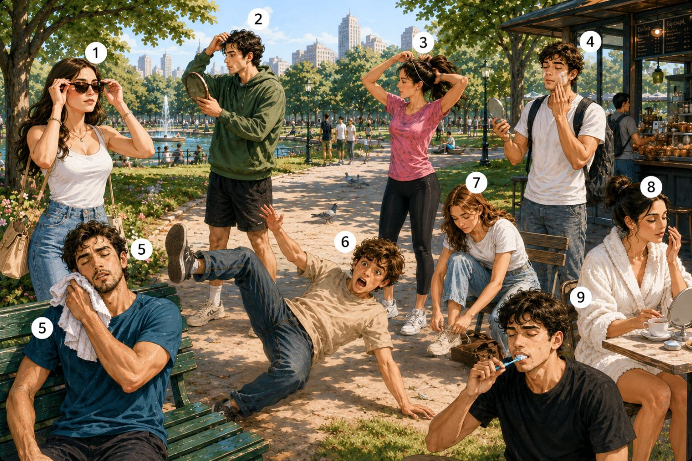
A. Se está atando los cordones.
B. Se está poniendo crema.
C. Se está mirando en el espejo.
D. Se está maquillando.
E. Se está poniendo las gafas de sol.
F. Se está cayendo.
G. Se está cepillando los dientes.
H. Se está secando el sudor.
I. Se está atando el pelo.
Reflexivos con estar + gerundio
Con los verbos reflexivos, el pronombre reflexivo va antes del verbo estar.
Estructura: pronombre reflexivo + estar + gerundio
me estoy levantando · te estás peinando · se está maquillando · nos estamos preparando
Ejemplos: Ella se está poniendo las gafas de sol. · Él se está cayendo. · María se está maquillando. · Carlos se está secando el sudor.
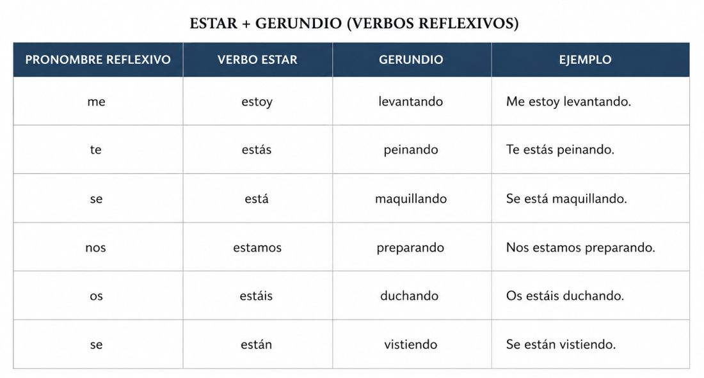
EjercicioCompleta las oraciones
Verbos: maquillarse · ducharse · peinarse · vestirse · levantarse · secarse · cepillarse · prepararse
Yo me estoy para salir.
Ella se está frente al espejo.
Nosotros nos estamos muy temprano.
Carlos se está después de correr.
Tú te estás los dientes.
Ellos se están para la ceremonia.
María se está el pelo.
Vosotros os estáis ahora mismo.
Alicia se está en el baño.
Robert se está antes de la reunión.
Lee el texto y contesta las preguntas
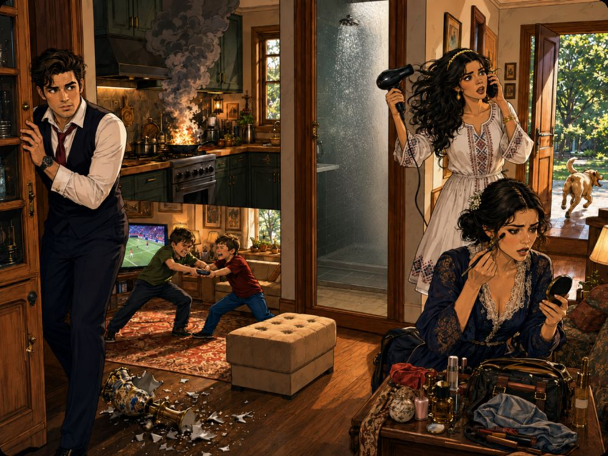
En la casa de Carlos hay muchos problemas hoy. Todo está pasando al mismo tiempo.
¡La comida se está quemando en la cocina!
El perro se está escapando por la puerta. Los niños se están peleando por el control remoto.
Carlos se está vistiendo muy rápido porque llega tarde al trabajo.
María se está maquillando en el salón y no encuentra su bolso.
Luis se está duchando, pero no hay agua caliente.
Nátasha se está secando el pelo mientras habla por teléfono.
Y Alessio… bueno, Alessio se está escondiendo porque rompió un jarrón muy caro.
EjercicioPreguntas
- ¿Dónde hay muchos problemas hoy?
- ¿Qué se está quemando en la cocina?
- ¿Qué está haciendo el perro?
- ¿Por qué Carlos se está vistiendo muy rápido?
- ¿Qué está haciendo María en el salón?
- ¿Qué no encuentra María?
- ¿Qué problema tiene Luis en la ducha?
- ¿Qué está haciendo Nátasha?
- ¿Con quién está hablando Nátasha?
- ¿Por qué se está escondiendo Alessio?
- ¿Qué están haciendo los niños?
- ¿Cómo está la casa: tranquila o caótica?
- ¿Por qué la familia empieza a reírse al final?
- ¿Los problemas son grandes o pequeños?
¿Cómo es tu novia?
Lee el diálogo y contesta
MarcosLuis, tengo una pregunta. ¿Cómo es tu mujer?
LuisMi mujer se llama Nátasha. Es muy bonita. Tiene el pelo largo, oscuro y ondulado. Tiene los ojos verde grisáceos y una mirada muy tranquila.
Marcos¿Es alta?
LuisSí, es bastante alta y elegante. Le gusta usar vestidos sencillos, pero muy bonitos. Muchas veces lleva ropa blanca con detalles tradicionales serbios.
MarcosParece una mujer especial.
LuisLo es. Tiene una belleza natural. No necesita mucho para llamar la atención.
Marcos¿Y cómo es su carácter?
LuisEs valiente, sincera y fuerte. También es muy cariñosa con las personas que quiere.
Marcos¿Es tranquila?
LuisA veces sí, pero también tiene mucho carácter. No le gustan las injusticias y siempre defiende lo que considera correcto.
MarcosEntonces no es una mujer fácil de engañar.
LuisNo, para nada. Nátasha es inteligente, observadora y muy intuitiva.
MarcosAhora entiendo por qué hablas de ella con tanto respeto.
LuisClaro. Para mí, Nátasha no es solo mi mujer. Es mi compañera, mi fuerza y mi hogar.
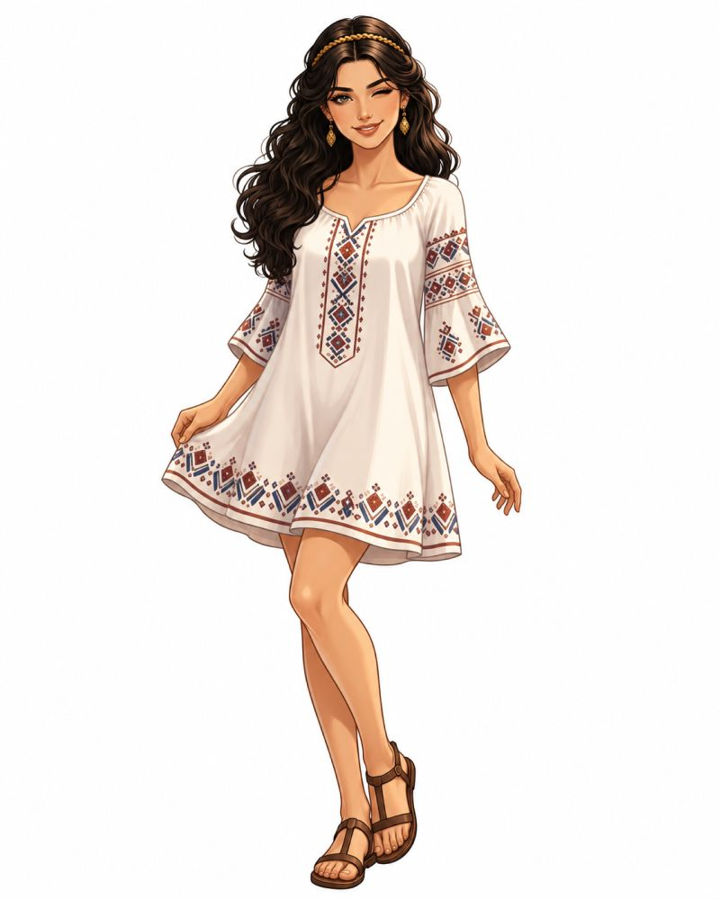
Ejercicio1. Preguntas
- ¿Quién está hablando con Luis?
- ¿De quién está hablando Luis?
- ¿Cómo es Nátasha físicamente?
- ¿Qué ropa suele usar Nátasha?
- ¿Cómo es Nátasha de carácter?
- ¿Por qué Marcos está nervioso?
- ¿Luis sabe que Nátasha está escuchando?
- ¿Dónde está escondida Nátasha?
- ¿Qué objeto tiene Luis sobre la mesa?
Ejercicio2. Señala verdadero o falso
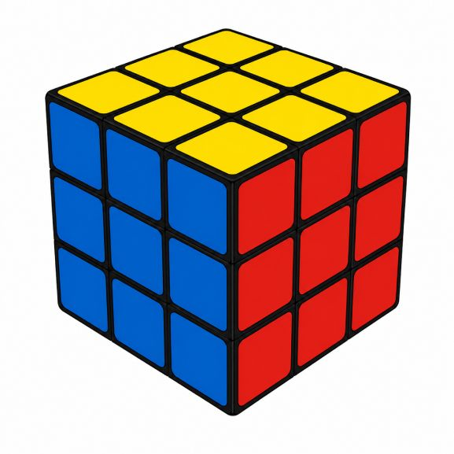
- Luis está hablando sobre Nátasha.
- Marcos está tranquilo y relajado.
- Nátasha está escondida y escucha la conversación.
- Luis sabe que Nátasha está detrás de la puerta.
- Nátasha lleva un vestido blanco con detalles tradicionales.
- Marcos no sabe que Nátasha está allí.
- Nátasha está enojada y grita desde la puerta.
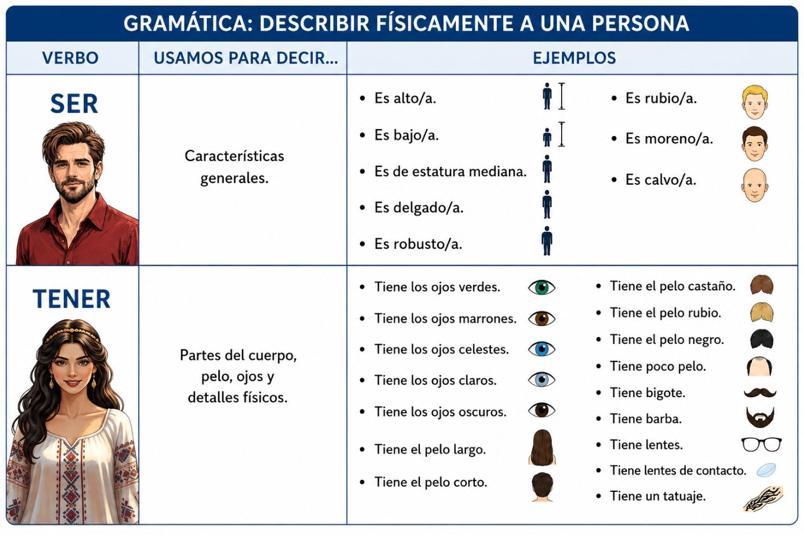
Ejercicio3. Completa con es o tiene
Luis alto.
Nátasha el pelo largo.
Luis moreno.
Nátasha los ojos claros.
Luis de estatura mediana.
Nátasha una diadema.
Luis barba.
Nátasha delgada.
Luis ojos marrones.
Nátasha elegante.
Ejercicio4. Relaciona. Une cada frase con SER o TENER.
- Es alto.
- Tiene el pelo largo.
- Tiene ojos verdes.
- Es delgada.
- Es moreno.
- Tiene barba.
- Tiene lentes.
- Es elegante.
Para hablar del carácter usamos el verbo ser
Luis es valiente e inteligente. · Nátasha es fuerte, sincera y cariñosa. · Marcos es serio y observador. · Alicia es intuitiva y curiosa.
EjercicioHabla de un amigo o amiga. ¿Cómo es su carácter?
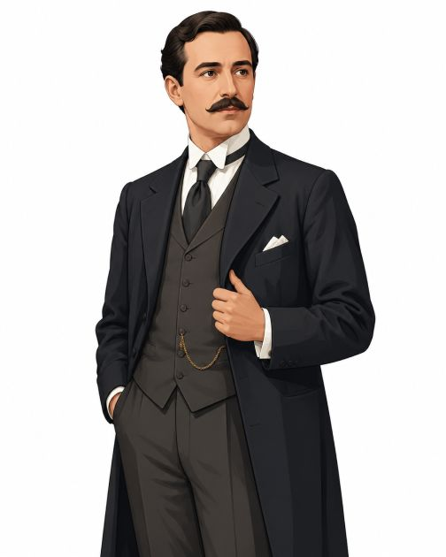
Ejemplo: Mi amigo Karl es inteligente pero muy reservado...
Gramática
ESTAR + GERUNDIO
Usamos estar + gerundio para hablar de una acción que ocurre ahora o en este momento.
Ejemplos: Luis está jugando al cubo Rubik. · María está tocando el violín. · Carlos está paseando al perro. · Nátasha está preparando comida.
Formación: estar + gerundio
yo estoy hablando · tú estás comiendo · él / ella / usted está escribiendo · nosotros/as estamos estudiando · ellos/as / ustedes están leyendo
Cómo formar el gerundio
Verbos en -AR → -ando: hablar → hablando · estudiar → estudiando · jugar → jugando
Verbos en -ER → -iendo: comer → comiendo · leer → leyendo
Verbos en -IR → -iendo: vivir → viviendo · escribir → escribiendo
Verbos reflexivos con estar + gerundio
Con los verbos reflexivos usamos estos pronombres: me · te · se · nos · se
La estructura más común es: pronombre reflexivo + estar + gerundio
| Persona | Ejemplo |
|---|---|
| yo | me estoy levantando |
| tú | te estás peinando |
| él / ella / usted | se está maquillando |
| nosotros/as | nos estamos preparando |
| ellos/as / ustedes | se están vistiendo |
Ejemplos: Ella se está poniendo las gafas de sol. · Él se está cayendo. · María se está maquillando. · Carlos se está secando el sudor. · Nátasha se está peinando. · Alicia se está mirando en el espejo.
Importante: el pronombre reflexivo normalmente va antes del verbo estar.
Correcto: Ella se está maquillando. · Él se está duchando.
También es posible poner el pronombre unido al gerundio.
También correcto: Ella está maquillándose. · Él está duchándose.
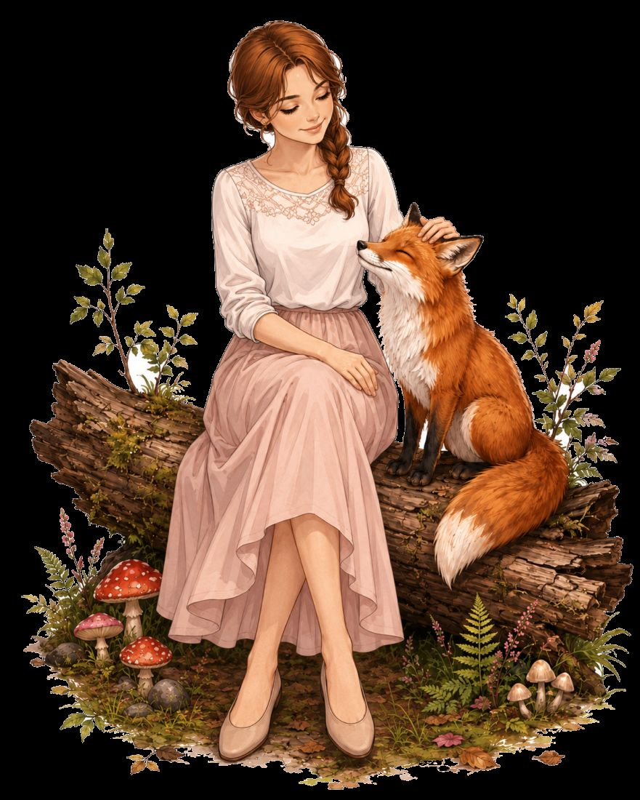
Ejercicio1. Completa con estar + gerundio
Marcos se está después de dormir bien. (levantarse)
Luis está el cubo Rubik. (armar)
Nátasha está el gusli. (tocar)
María está un libro. (leer)
Carlos está al perro. (pasear)
Robert está el horizonte. (observar)
Alicia está en la escena. (actuar)
Alessio está las joyas del escaparate. (mirar)
Ejercicio2. Completa con el pronombre reflexivo con estar + gerundio
Marcos está despertando.
Nátasha está peinando.
Alicia está maquillando.
Carlos está secando el sudor.
María está preparando para la ceremonia.
Los niños están peleando por el control remoto.
Yo estoy vistiendo.
Tú estás mirando en el espejo.
Ejercicio3. Describe físicamente. Completa con es o tiene.
Luis el pelo castaño.
Nátasha elegante.
Marcos lentes.
Alicia el pelo oscuro.
Roberto fuerte.
María los ojos marrones.
Carlos robusto.
Robert barba.
Nátasha el pelo largo.
Luis de estatura mediana.
Ejercicio4. Describe el carácter. Completa con una palabra adecuada.
Palabras: curioso/a, observador, valiente, tranquilo/a, alegre, sospechoso, serio, decidido/a
Marcos observa todo. Es muy .
Nátasha defiende lo que cree justo. Es .
Alicia estudia las estrellas y hace muchas preguntas. Es .
Luis no tiene miedo en los momentos difíciles. Es .
Carlos siempre sonríe. Es .
Alessio mira todo como si quisiera robar algo. Parece .
María lee tranquila junto a la ventana. Es .
Robert mira el horizonte en silencio. Parece .
Cultura
El carácter de los hispanohablantes
Lee el texto y contesta las preguntas.
En general, los hispanohablantes son personas sociables, activas y alegres. Les gusta hablar, compartir tiempo con otras personas y expresar sus emociones. Para muchos hispanohablantes, la comunicación no es solo información: también es amistad, confianza y cariño.
Muchas personas hispanohablantes son muy positivas. Sonríen, hacen bromas y buscan el lado bueno de las cosas. En una conversación, suelen ser expresivas: hablan con las manos, usan gestos y demuestran sus sentimientos con naturalidad.
También son personas cercanas. Les gusta estar con la familia, visitar a los amigos y pasar tiempo en grupo. En muchos países hispanohablantes, una comida, una fiesta o una conversación larga son momentos muy importantes.
En comparación con algunas culturas europeas más reservadas, los hispanohablantes pueden parecer más abiertos y espontáneos. Muchas veces hablan más, se acercan más y muestran más emoción. Esto no significa que todos sean iguales, pero sí es una característica común en muchas culturas hispanohablantes.
Por eso, muchas personas dicen que los hispanohablantes tienen una energía especial. Son alegres, comunicativos y, en general, muy positivos. Les gusta vivir con intensidad y compartir esa alegría con los demás.
EjercicioPreguntas
- ¿Cómo son, en general, los hispanohablantes?
- ¿Por qué muchas personas dicen que los hispanohablantes son positivos?
- ¿Qué les gusta hacer a muchas personas hispanohablantes?
- ¿Cómo expresan sus emociones los hispanohablantes?
- ¿En qué se diferencian los hispanohablantes de algunas culturas europeas más reservadas?
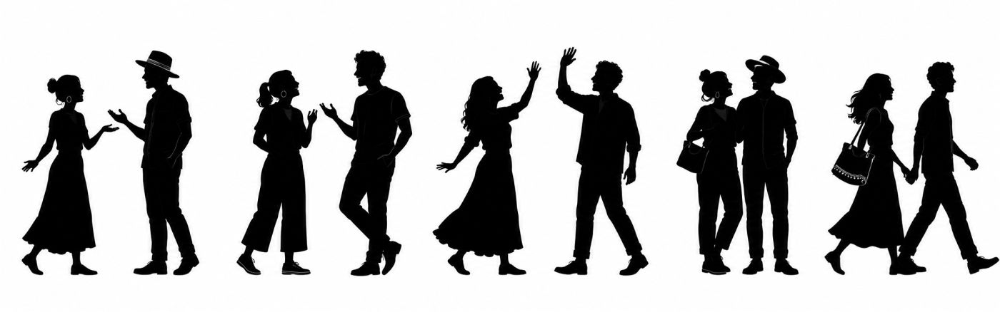
Historieta
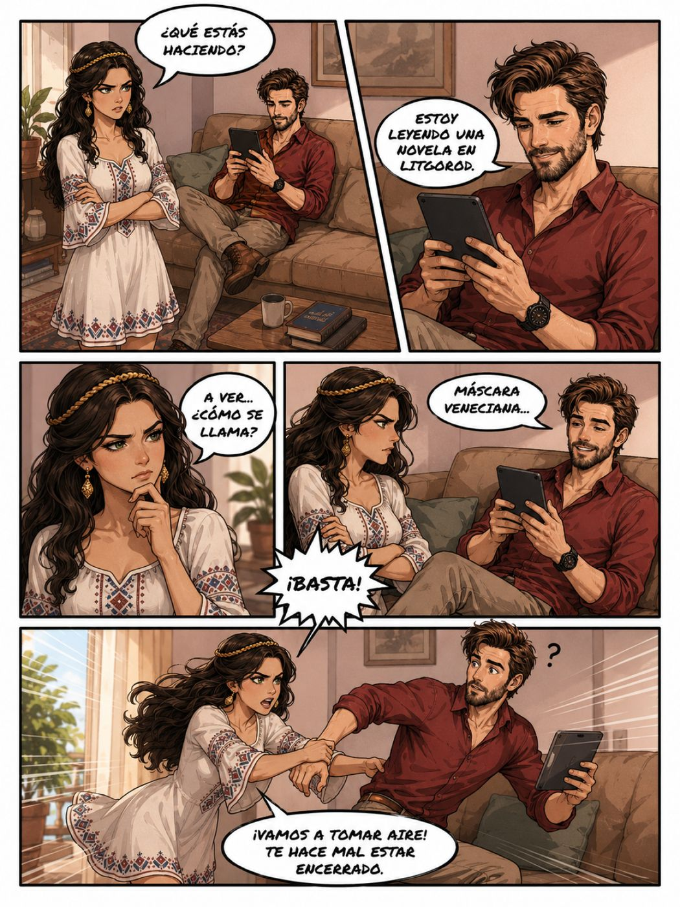
Notas importantes
¿Por qué Nátasha está enojada?
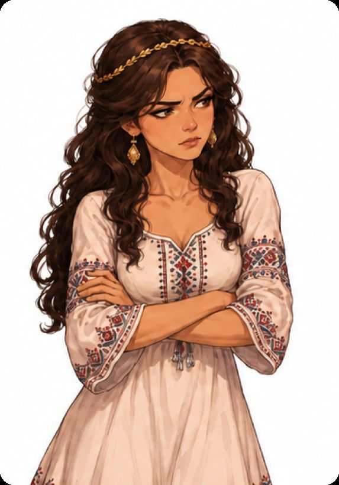
Nátasha no está enojada porque Luis lee. Leer es bueno.
Pero Luis lee una novela todo el tiempo. No habla con Nátasha. No la mira. Está muy concentrado en el teléfono.
La novela se llama Máscara veneciana. Es una novela de Robert Fader.
En esa novela hay una mujer muy bonita. Ella vive una historia romántica y misteriosa. Por eso Nátasha se pone celosa.
Nátasha piensa: "Luis lee mucho sobre esa mujer. ¿Y yo?"
Entonces Nátasha le dice: —¡Basta! Vamos a tomar aire. Te hace mal estar encerrado.
Nátasha no odia los libros. Nátasha quiere estar con Luis. Quiere caminar, hablar y pasar tiempo juntos.
La escena es cómica porque Nátasha está celosa de una novela.
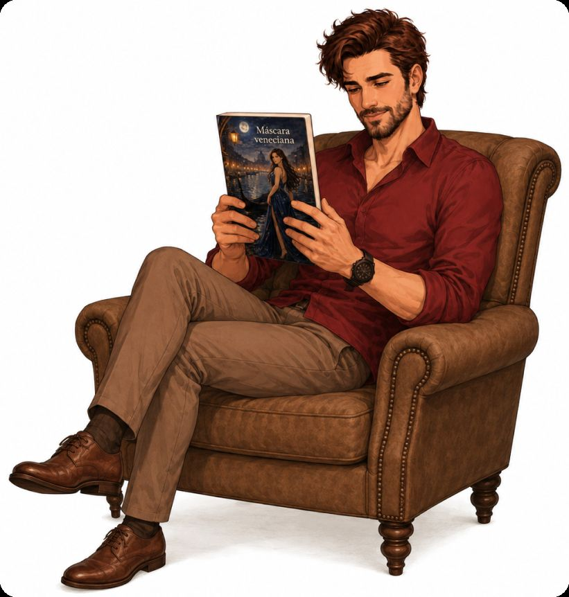